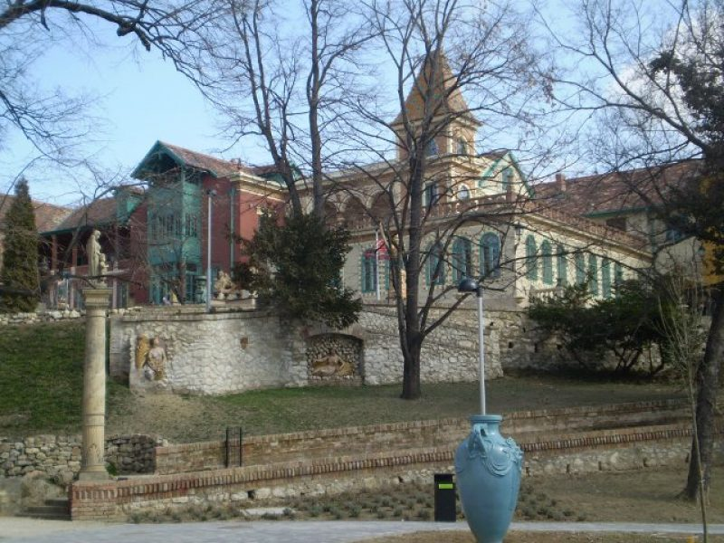

Városfelfedező séta - kvízjáték Pécs Zsolnay Negyed
| Időtartam: | 1,5-2 óra |
| Start/Cél helyszín: | Pécs, Zsolnay Negyed, Bóbita Bábszinház melletti szabadtéri színpad |
| Városfelfedező séta elemei: | Feladatlap Térkép Lekaparható festékkel eltakart megoldókulcs |
| További információk | A foglalkozást animátor vezeti. 2-3 fős csoportok játszhatják A csoportok az idővel nem versenyeznek, de az animátor által megadott határidőre vissza kell érniük az indulási ponthoz. Az osztály számára a részvételről emléklapot állítunk ki |
Program menete Programgazda-animátorunk a csoportot 2-3 fős csapatokra bontja, kiosztja a szükséges térképeket,
a kvízkérdéseket is tartalmazó, városismereti feladatlapokat, valamint egy válaszadáshoz szükséges,
lekaparható festékkel eltakart megoldókulcsot. A térképen bejelölt útvonalon 37 pont szerepel,
melyekhez egy-egy kérdés tartozik.
Részvételi díj a 2022/2023-as évre:
25 főig: 24.750 Ft/csoport
26 főtől: 990 Ft/fő
Programgazda-animátor díja: 5.000 Ft/csoport (igénylése kötelező)
Kedvezmény: A programon 2 pedagógus ingyenesen vehet részt!
